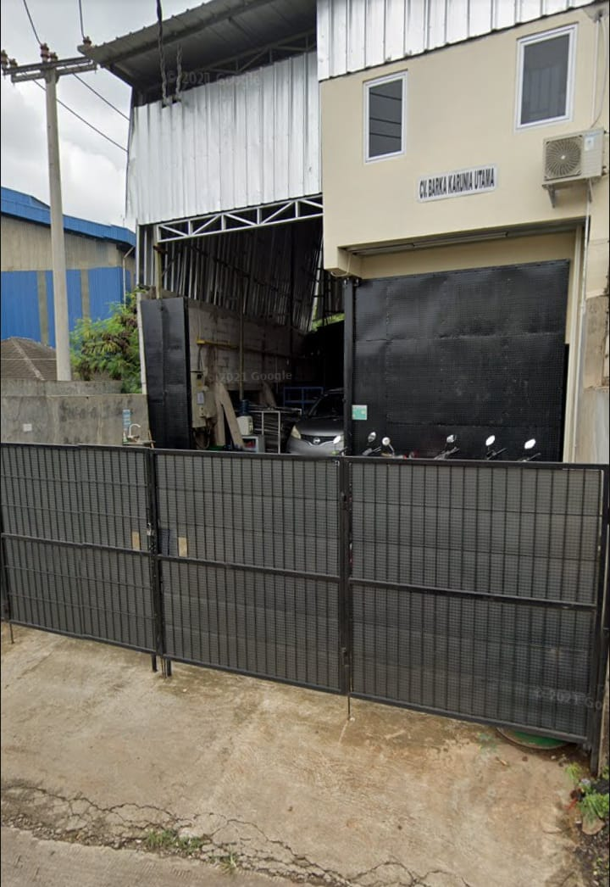
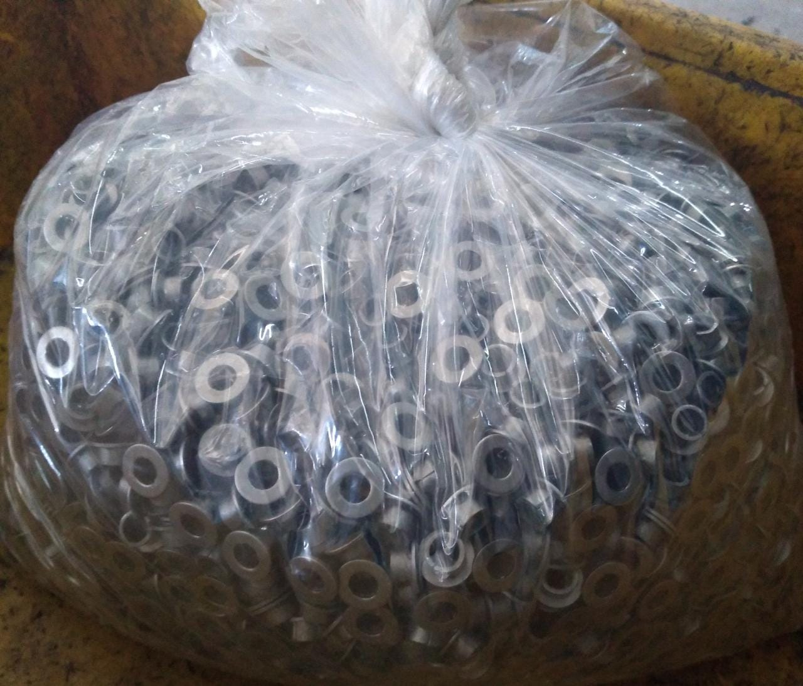
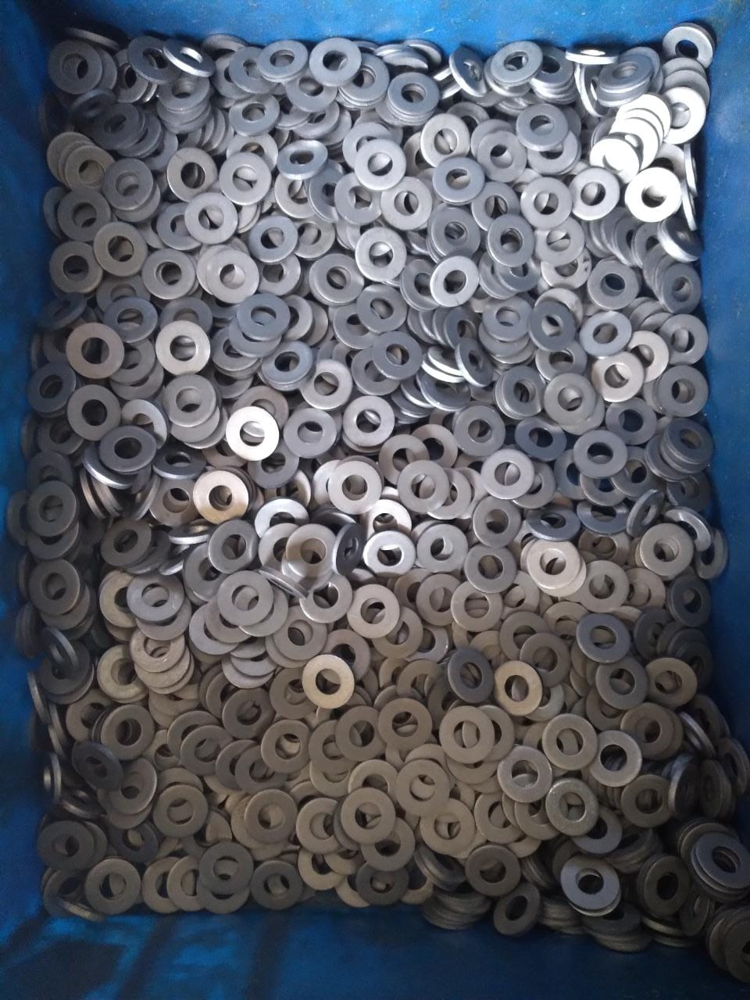
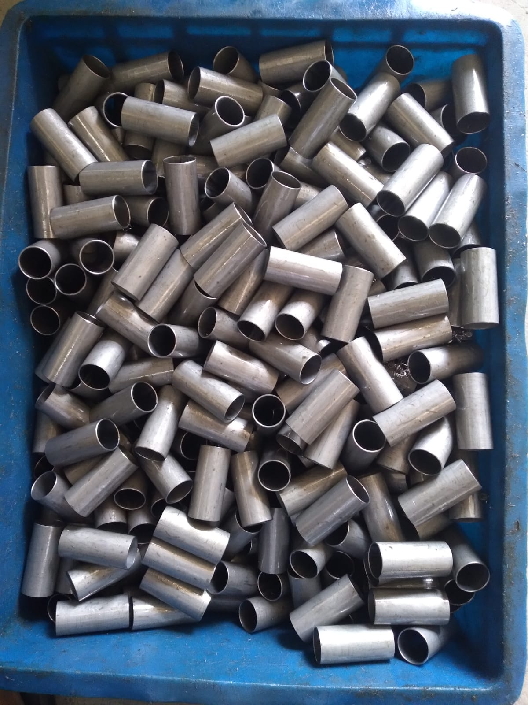

<!DOCTYPE html>
<html class="no-js">
    <head>
        <!-- Basic Page Needs
        ================================================== -->
        <meta charset="utf-8">
        <meta http-equiv="Content-Type" content="text/html; charset=utf-8">
        <title>Laporan Prakerin</title>
        <meta name="description" content="">
        <meta name="keywords" content="">
        <meta name="author" content="">
        <!-- Mobile Specific Metas
        ================================================== -->
        <meta name="format-detection" content="telephone=no">
        <meta name="viewport" content="width=device-width, initial-scale=1">

        
        <!-- Template CSS Files
        ================================================== -->
        <!-- Twitter Bootstrs CSS -->
        <link rel="stylesheet" href="plugins/bootstrap/bootstrap.min.css">
        <!-- Ionicons Fonts Css -->
        <link rel="stylesheet" href="plugins/ionicons/ionicons.min.css">
        <!-- animate css -->
        <link rel="stylesheet" href="plugins/animate-css/animate.css">
        <!-- Hero area slider css-->
        <link rel="stylesheet" href="plugins/slider/slider.css">
        <!-- slick slider -->
        <link rel="stylesheet" href="plugins/slick/slick.css">
        <!-- Fancybox -->
        <link rel="stylesheet" href="plugins/facncybox/jquery.fancybox.css">
        <!-- hover -->
        <link rel="stylesheet" href="plugins/hover/hover-min.css">
        <!-- template main css file -->
        <link rel="stylesheet" href="css/style.css">
    </head>
    <body>

<!--
        ==================================================
        Header Section Start
        ================================================== -->
<section class="top-bar animated-header">
    <div class="container">
        <div class="row">
            <div class="col-lg-12">
                <nav class="navbar navbar-expand-lg navbar-light bg-light">
                    <a class="navbar-brand" href="index.html">
                    </a>
                    <button class="navbar-toggler" type="button" data-toggle="collapse" data-target="#navbarSupportedContent" aria-controls="navbarSupportedContent"
                        aria-expanded="false" aria-label="Toggle navigation">
                        <span class="navbar-toggler-icon"></span>
                    </button>

                    <div class="collapse navbar-collapse" id="navbarSupportedContent">
                        <ul class="navbar-nav ml-auto">
                            <li class="nav-item">
                                <a class="nav-link" href="#home">Home
                                    <span class="sr-only">(current)</span>
                                </a>
                            </li>
                            <li class="nav-item">
                                <a class="nav-link" href="#about">About</a>
                            </li>
                            <li class="nav-item">
                                <a class="nav-link" href="#sejarah">Sejarah Perusahaan</a>
                            </li>
                            <li class="nav-item">
                                <a class="nav-link" href="#laporan">Laporan Kegiatan</a>
                            </li>
                            <li class="nav-item">
                                <a class="nav-link" href="#kesimpulan">Kesimpulan</a>
                            </li>
                        </ul>
                    </div>
                </nav>
            </div>
        </div>
    </div>
</section>

<!--
==================================================
Slider Section Start
================================================== -->
<section id="hero-area" >
<div class="container">
    <div class="row">
        <div class="col-md-12 text-center">
            <div class="block wow fadeInUp" data-wow-delay=".3s">
                
                <!-- Slider -->
                    <div id="home">
                    <section class="cd-intro">
                    <h1 class="wow fadeInUp animated cd-headline slide" data-wow-delay=".4s" >
                    <span>HI Nama saya EDELWEISS HARUMI JINGGA</span><br>
                    <span>XII RPL 3</span> <br><br><br>
                    <span>SIDANG PKL JURUSAN REKAYASA PERANGKAT LUNAK</span>
                    </h1>
                    </section> <!-- cd-intro -->
                    </div>
                    <!-- /.slider -->
                        
                </div>
            </div>
        </div>
    </div>
</section><!--/#main-slider-->

<!--
==================================================
About Section Start
================================================== -->
<div id="about">
<section id="about">
    <div class="container">
        <div class="col-md-12 col-sm-12">
            <div class="block wow fadeInRight">
                
            </div>
            <br>
        </div>
        <div class="row">
            <div class="col-md-9 col-sm-6">
                <div class="block wow fadeInLeft">
                    <h2>
                    ABOUT ME
                    </h2>
                    <table>
                        <tbody>
                        <tr><td>Nama</td> <td>&nbsp;&nbsp;:</td><td>&nbsp;&nbsp;Edelweiss Harumi Jingga</td></tr>
                        <tr><td>Tempat Tanggal Lahir</td> <td>&nbsp;&nbsp;:</td><td>&nbsp;&nbsp;BEKASI 10 Februari 2005</td></tr>
                        <tr><td>Jenis Kelamin</td> <td>&nbsp;&nbsp;:</td><td>&nbsp;&nbsp;Perempuan</td></tr>
                        <tr><td>Kompetensi Keahlian</td> <td>&nbsp;&nbsp;:</td><td>&nbsp;&nbsp;Rekayasa Perangkat Lunak</td></tr>
                        <tr><td>Sekolah</td> <td>&nbsp;&nbsp;:</td><td>&nbsp;&nbsp;SMK NEGERI 2 KOTA BEKASI</td></tr>
                        <tr><td>Alamat Sekolah</td> <td>&nbsp;&nbsp;:</td><td>&nbsp;&nbsp;Jl. Lapangan bola rawa butun Kel.Ciketing Udik Kec. 
                            Bantargebang Kota Bekasi</td></tr>
                        <tr><td>NIS</td> <td>&nbsp;&nbsp;:</td><td>&nbsp;&nbsp;192010445</td></tr>
                        </tbody></table>
                </div>
                
            </div>
        </div>
    </div>
</section> <!-- /#about -->
</div>


<!--
==================================================
Portfolio Section Start
================================================== -->
<div id="sejarah">
<section id="works" class="works">
    <div class="container">
        <div class="section-heading">
            <h1>Sejarah Perusahaan</h1>
            <br>
            <h3>CV. BARKA KARUNIA UTAMA</h3>
        </div>
        <div class="row">
            <div class="col-lg-4 col-sm-6" style="margin-left: 35%;">
                <figure class="wow fadeInLeft animated">
                    <div class="img-wrapper">
                        
                    </div>
                </figure>
            </div>
        </div>
    </div>
    
    <div class="col-lg-12" style="margin: 25px;">
        <h3 style="text-align: center;">Sejarah Perusahaan</h3>
        <p>CV. BARKA KARUNIA UTAMA adalah perusahaan yang 
            bergerak di bidang metal processing didirikan pada 11 juni 2014 
            berkomitmen untuk memberikan dukungan penuh atas sustainability 
            supply kepada customer :</p>
        <p>i. PT. RAHMAT PERDANA ADI METAL</p>
        <p>ii. PT. INDOMATSUMOTO.</p>
        <p>iii. PT. DELA CEMARA INDAH</p>
        <p>iv. PT. BERLINDO MITRA UTAMA.</p>
        <p>Seiring dengan kemajuan yang pesat dalam dunia usaha otomatif 
            dan elektronik diindonesia dan laju pertumbuhan industri penopang nya 
            yang juga sudah mulai berkembang. Maka dibutuhkan juga sustainability 
            suplay dari para pemasok sebagai rangkaian dari supply chain untuk 
            menunjang proses produksi dicostomer induk.
            </p>
        <p>Sustainability supply yang dimaksud didasari pada: kualitas orang 
            baik kapasitas produksi yg cukup delivery yang terjaga dan terjamin. </p>
        <p>Persoalan sustainability supply dari para pemasok sebagai 
            rangkaian dari supply chain, mengharuskan pemasok meningkatkan 
            kemandiriannya baik produksi maupun efficientcy.
            </p>
    </div>
</section> <!-- #works -->
</div>
<!--
==================================================
Portfolio Section Start
================================================== -->
<div id="laporan">
<section id="feature">
    <div class="container">
        <div class="section-heading">
            <h1>Laporan Kegiatan</h1>
            <br>
            <h2>GALLERY</h2>
        </div>
    </div>
</section> <!-- /#feature -->
<section class="px-5 py-5">
    <div class="row" >
        <div class="col-md-4">
          <center>
            
          </center>
        </div>
    
        <div class="col-md-4">
          <center>
            
          </center>   
        </div>
        
        <div class="col-md-4">
          <center>
            
          </center>     
        </div>
    </div>  
    <hr style="height:1px;border:none;color:#333;background-color:#333; margin-top: 50px;" />  
    </section>
</div>

    <div id="kesimpulan">
    <section id="feature">
        <div class="container">
            <div class="section-heading">
                <h1>Kesimpulan</h1>
                
            </div>
        </div>
        <div class="col-lg-12" style="margin: 25px;">
            <p>
                Kegiatan PKL sangatlah berguna untuk menambah wawasan dan 
pengalaman dalam melakukan interaksi di lingkungan kerja yang 
sesungguhnya.
            </p>
            <p>
                Selama melasanakan praktek kerja industri (PRAKERIN) di CV. 
BARKA KARUNIA UTAMA, penulis mendapatkan banyak 
pengetahuan dan pengalaman berharga yang sebelumya tidak dapat di 
sekolah. penulis jadi mengerti akan dunia kerja sesungguhnya. 
pembelajaran di dunia kerja melalui PKL adalah suatu strategi yang sangat 
berguna untuk siswa mengalami proses belajar melalui bekerja langsung 
pada pekerjaan yang sesungguhnya sehingga tida kaget lagi saat benarbenar terjun ke dunia industri. 
            </p>
            <p>
                Pada intinya, kegiatan Prakerin sangat berguna sebagai pelengkap 
dan proses pematangan atau pemantapan kelak saat sudah berkecimpung 
dalam dunia kerja.
            </p>
            </div>
    </section>
</div>

<footer>
    <div class="container text-center">
        <div class="row">
            <div class="col-md-12">
                <div class="block">
                    <a href="#" class="footer-logo mb-4">LAPORAN PRAKERIN</a>
                    <ul class="list-inline footer-menu">
                        <li class="list-inline-item">
                            <a href="#home">Home</a>
                        </li>
                        <li class="list-inline-item">
                            <a href="#about">About</a>
                        </li>
                        <li class="list-inline-item">
                            <a href="#sejarah">Sejarah Perusahaan</a>
                        </li>
                        <li class="list-inline-item">
                            <a href="#laporan">Laporan Kegiatan</a>
                        </li>
                        <li class="list-inline-item">
                            <a href="#kesimpulan">Kesimpulan</a>
                        </li>
                    </ul>
                    <p class="copyright-text">Copyright &copy;Abel N.</p>
                </div>
            </div>
        </div>
    </div>
</footer>
	<!-- Template Javascript Files
	================================================== -->
	<!-- jquery -->
	<script src="plugins/jQurey/jquery.min.js"></script>
	<!-- Form Validation -->
    <script src="plugins/form-validation/jquery.form.js"></script> 
    <script src="plugins/form-validation/jquery.validate.min.js"></script>
	<!-- slick slider -->
	<script src="plugins/slick/slick.min.js"></script>
	<!-- bootstrap js -->
	<script src="plugins/bootstrap/bootstrap.min.js"></script>
	<!-- wow js -->
	<script src="plugins/wow-js/wow.min.js"></script>
	<!-- slider js -->
	<script src="plugins/slider/slider.js"></script>
	<!-- Fancybox -->
	<script src="plugins/facncybox/jquery.fancybox.js"></script>
	<!-- template main js -->
	<script src="js/main.js"></script>
 	</body>
</html>